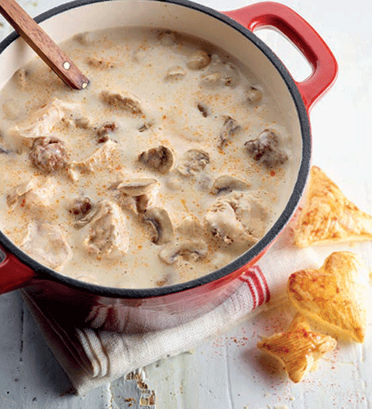

Vol Au Vont

A Description of a Vol Au Vont
Videe, vol-au-vent of koninginnenhapje: iedereen weet hoe deze klassieker op het bord verschijnt. Laat je echter niet verrassen, want de bereiding ervan vraagt wat tijd en moeite.Een versgebakken kuipje van bladerdeeg, verse kip, gehaktballetjes en paddenstoelen in een romige saus en de luchtige hollandaise.
Wie dit bedacht verdient een standbeeld.
Ingredients
- Selder
- Wortels
- Preistengels
- Ui
- Look
- Laurier
- Rozemarijn
- Peterseliestelen
- Kruidnagel
Steps
- Bereid een ketel met een (variant op de) klassieke groentebouillon. Je kan ook zelf groentebouillon maken.
- Breng een ruime hoeveelheid water aan de kook. Spoel alle groenten, snij ze grof en doe ze in de grote pot met water.
- Voeg de verse kruiden, wat zout en de specerijen toe.
- Laat de bouillon kort sudderen en leg er vervolgens de kip in.
- Laat de kippenbouillon een uurtje koken. Gebruik een schuimspaan om tussendoor het vet en onzuiverheden weg te scheppen.
- Schep de gare kip uit de pot en laat ze afkoelen.
- Zeef de bouillon. Een deel ervan heb je straks nodig voor het garen van de gehaktballetjes en de bereiding van de saus.
- Maak zelf de bladerdeegkoekjes om de vulling in te scheppen.
- Klop een dooier los met een klein beetje water.
- Verwarm de oven voor tot 180°C.